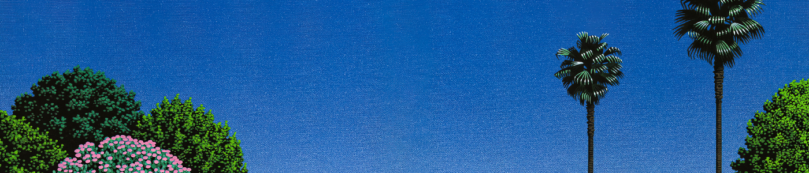

At the start, city pop leans towards the sounds of California bands, Buffalo Springfield and Little Feat. Arcand. R and Goldner S. 2019 states that Hosono’s sounds are heavily influenced by popular American music and the alure of the west coast.
Another important figure to city pop is Hachimitsu Pie, which members grown up during post-war years, exposing them to American music.
Japan at this time was celebrating their post-war economic miracle through living in excess. The people of japan heavily spent their money on imported wine and liquor, luxury clothing, art and international travel. (Cohen E. 2019) Japanese nightlife also starts to flourish, with flashy restaurants, hostess bars, discotheques and more.